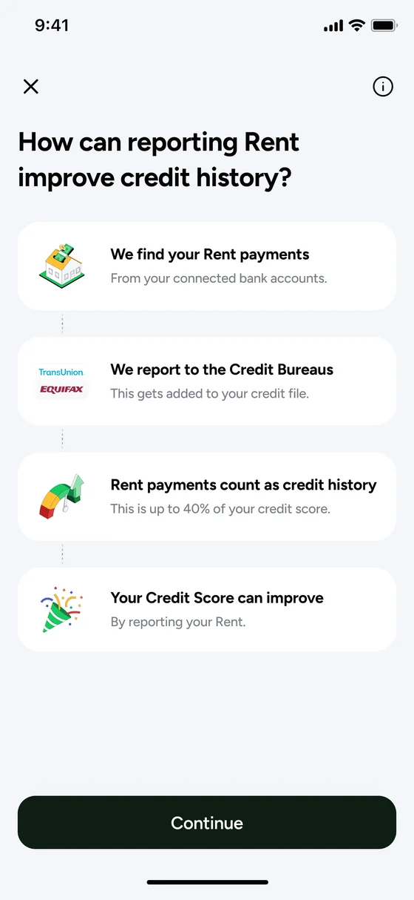
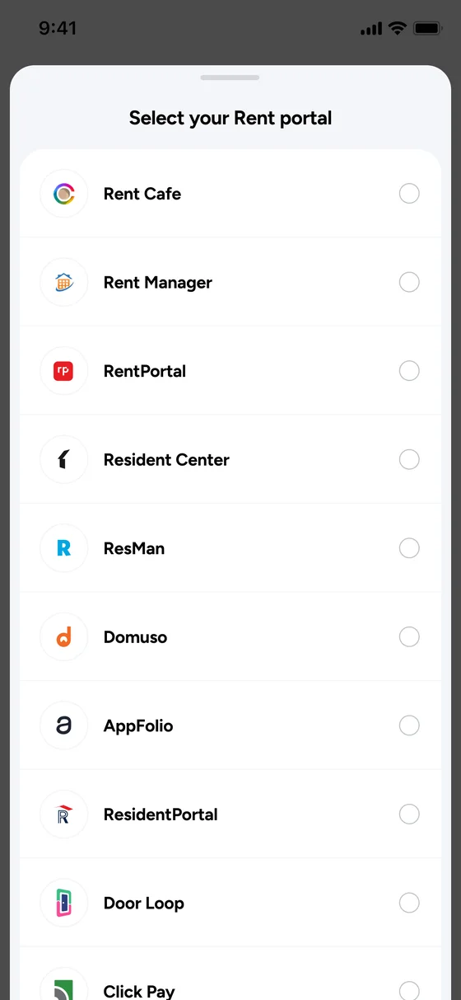
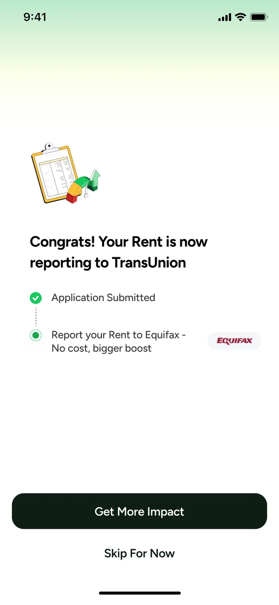
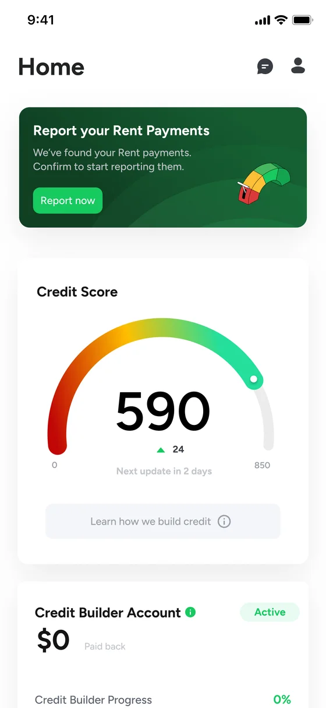
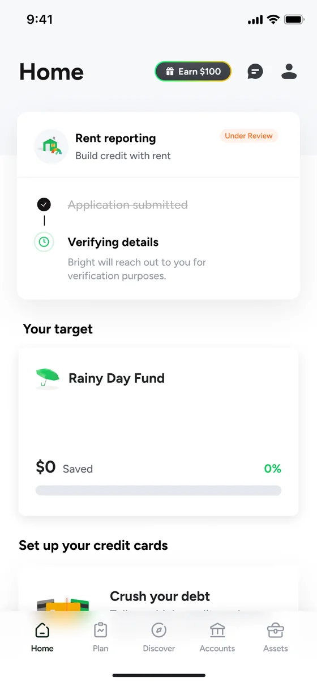
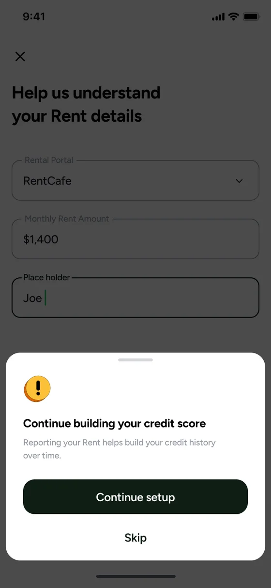

Redesigned the funnel that lets renters report rent to credit bureaus. Application conversion went from 30% to 50% and related support tickets fell 15%.
For millions of renters with thin credit files, the answer used to be no. Rent is the largest monthly expense most people have, but it doesn't show up on a credit report unless someone actively reports it. That gap is what this project was built to close.
Rent reporting lets users connect their rent portal and have their payment history reported to credit bureaus. For the target audience, users rebuilding or starting their credit, this is one of the fastest paths to a real score improvement.
I designed the end-to-end funnel. The goal was clear: make it easy for users to start reporting, and make the value obvious before they commit.
The pitch screen needed to communicate one thing: your rent payments can count toward your credit score. No fine print first. Value first, then the steps.
Users pick their rent portal or indicate they don't have one. Reporting goes to two credit bureaus, each with different handling. The design needed to account for both paths, the transition between them, and what users see when one bureau is active and the other isn't.
Banners on the Home Tab. Widgets in the Credit Tab. Opt-out users seeing a path back in. Each touchpoint with its own state logic based on the user's reporting status.






What shipped was the full funnel: sign-up through reporting, with all bureau paths, portal selection, edge cases for users without a portal, and the widget and banner system surfacing the feature across the app.
Later, support for the second bureau was added to the funnel. A disclosure update moved the compliance layer into the Credit Tab.
Frontend had unresolved issues. The PM was pushing to close the sprint. I flagged it to the Design Director and asked to sync with engineering the next morning before releasing.
Sign-off is the last moment design has leverage over what ships. I'd rather delay by a day than approve something I know needs fixes.
Shreyo Debnath · Product Designer